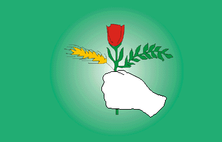

Patriotic Union of Kurdistan
This article needs to be updated. (July 2014) |
Patriotic Union of Kurdistan Yekêtiy Nîştimaniy Kurdistan یەکێتی نيشتيماني کوردستان | |
|---|---|
| Leader | Bafel Talabani |
| President | Bafel Talabani |
| Founder | Omar Shekhmus Adel Murad Jalal Talabani Ali Askari Fuad Masum Abdul Razaq Feyli |
| Founded | 1 June 1975 |
| Headquarters | Sulaymaniyah, Kurdistan Region |
| Ideology | Kurdish nationalism Social democracy Secularism |
| Political position | Centre-left |
| National affiliation | Kurdistani Coalition |
| International affiliation | Socialist International Progressive Alliance |
| Colours | Medium sea green |
| Council of Representatives of Iraq[a] | 17 / 329 |
| Kurdistan Parliament[b] | 21 / 111 |
| Party flag | |
|  | |
| Website | |
| pukmedia.com | |
{kind=link}
{kind=link}
The Patriotic Union of Kurdistan (PUK; Kurdish: یەکێتیی نیشتمانیی کوردستان, romanized: Yekîtiya Nîştimanî ya Kurdistanê) is a political party active in Kurdistan Region and the disputed territories in Iraq.[1] The PUK describes its goals as self-determination, human rights, democracy and peace for the Kurdish people of Kurdistan and Iraq. The PUK is currently under the leadership of Bafel Talabani.[2] The PUK was founded in 1975 by Jalal Talabani, Nawshirwan Mustafa, Fuad Masum, Adel Murad, Ali Askari and Abdul Razaq Feyli.
History[edit]
Discontent within the Kurdistan Democratic Party (KDP)[edit]
The PUK traces its political heritage to Sulaymaniyah native Ibrahim Ahmad. After the collapse of the Soviet-backed Kurdish Mahabad Republic in Iran in early 1947, Ibrahim Ahmad, previously the Sulaymaniyah representative of the Iranian KDP (KDP-I), joined the newly formed Iraqi KDP. Ahmad was a highly influential leftist intellectual, who by 1951 had succeeded in rallying most of the Iraqi Kurdish leftist-nationalists to the new Iraqi KDP, which, in turn, took the opportunity to convene a second Party Congress and duly elect Ahmad as secretary-general (effectively acting Chairman).[3]
However, from the very beginning in Iran, Ibrahim Ahmad's leftist politics, "intellectualism", and support for Qazi Muhammad put him at odds with the faction of the KDP loyal to Mustafa Barzani and his traditionalist-conservative tribal support base. It was "well-known in nationalist circles that the relations between the two men Mustafa and Qazi were not easy".[4] Ibrahim Ahmad was soon joined by up-and-coming intellectual and socialist Jalal Talabani. Barzani and Ahmad were known to dislike each other. But while each wanted to reduce the others' influence in the KDP, each also knew that the other was indispensable in securing the loyalty of their respective support-bases.
When the first Ba'ath Party government was deposed in a coup led by Abdul Salam Arif, Mustafa developed a close relationship with Arif. Mulla Mustafa signed an agreement with Arif in his personal capacity, rather than as president of the KDP. This infuriated Ahmad and Jalal Talabani as the agreement omitted any mention of self-administration, let alone autonomy—the whole point for which the Kurds had been fighting a long-term guerrilla war. Arif threatened force against any Kurdish opponent of Mustafa, while Mustafa declared that any resistance to Baghdad would constitute a declaration of war against himself and the Barzanis.[5]
Ibrahim Ahmad and Jalal Talabani decried this complicity, and as they saw it, submission, to Baghdad. Mulla Mustafa rallied the conservatives and tribal leaders to his side. Furious debates and campaigning followed, but Ahmad's and Talabani's arguments could not dislodge Mulla Mustafa's position as the popular figurehead of the Kurdish people. Mulla Mustafa would accept no dissent, and, fearing for their lives, Ahmad and his followers slipped away at night from a heated discussion with Mulla Mustafa, and retreated back to their stronghold in Mawat, Iraq.[6]
At the Sixth Party Congress of the KDP in July 1964, representatives from the Ahmad-Talabani faction were arrested upon arrival. A few days later Mulla Mustafa sent his son, Idris Barzani with a large force to drive Ahmad, Talabani, and their 4,000 or so followers into exile in Iran. With this, Mulla Mustafa had finally achieved undisputed control of the KDP.[6]
Founding[edit]


After the defeat of the Kurds in the 1974–1975 Revolt, on 22 May 1975, Talabani met in a coffee shop called Gligla, in Aum Rmana, Damascus, with Fuad Mausm, Adel Murad, and Abdul Razaq Faily. That day, the PUK announced its formation via Syrian and Lebanese media. The day after, Talabani visited Berlin in West Germany and met three other co-founders, Nawshirwan Mustafa, Omar Shekhmus, and Kamal Fwad, and some other activists. On 1 June 1975, the PUK was announced again in Berlin, and thus it was decided that 1 June is the anniversary date of the founding of the Patriotic Union of Kurdistan (PUK).
The PUK was a coalition of at least five separate political entities, the most significant of which were Talabani and his closest followers, Nawshirwan Mustafa's clandestine Marxist-Leninist group Komala, and the Kurdistan Socialist Movement (KSM), formed as a result of a series of meetings within the cadres of the Aylul Revolution who took refuge in Iran in 1975, including Omer Dababa, Ali Askari, Dr. Khalid, Ali Hazhar, Kardo Galali, Ibrahim Ahmad, Jamal Agha, Rasul Mamand, Mala Nasih, Abdulrahman Gomashini, Milazm Tahir, Ali Wali and Kamal Mihedeen. The PUK served as an umbrella organization unifying various trends within the Kurdish political movement in Iraq.
The PUK received grassroots support from the urban intellectual classes of Iraqi Kurdistan upon its establishment, partly due to five of its seven founding members being Ph.D. holders and academics. In the early 1980s, the PUK evolved and broadened its appeal to all sections of Iraqi Kurdish society, especially the rural classes.
In 1992, the constituent groups within the PUK merged into a unified political movement that affirmed its social-democratic identity and affiliation. Their communique ascribed the collapse of the revolt to "the inability of the feudalist, tribalist, bourgeois rightist and capitulationist Kurdish leadership".
The PUK's support lies predominantly in the southern part of the Kurdistan Region.
Conflicts[edit]
Since the first Gulf War, the PUK has jointly administered Kurdistan Region with the Kurdistan Democratic Party (KDP). However, in 1994 the parties engaged in a three-year conflict, known as the Iraqi Kurdish Civil War. The conflict ended with US mediation, and reconciliation was eventually achieved.
In September 2001, the Islamist group Jund al-Islam (the Army of Islam) massacred 43 PUK members.[7]
Structure[edit]
A Co-Presidents are elected by the General Leadership Council.[8] The PUK has 36 branches throughout Iraqi Kurdistan and draws membership from a broad cross-section of Kurdish society. The membership of the PUK, based on statistics compiled in September 1998, stands at 800,280 members and associates. The PUK contested the 1992 elections for the Kurdistan National Assembly, and the party list acquired 423,682 votes of the total of 957,469 valid votes cast - giving the PUK commanding majority in three of Kurdistan Region's four provinces. The PUK is a member of the Socialist International.[9] Kosrat Rasul Ali was elected as the leader of the Supreme Political Council at the party congress in December 2019 and Lahur Talabany and Bafel Talabany were elected as Co-Presidents in February 2020 to lead the party.
Organizational structure[edit]
The PUK's structure consists of 8 bureaus:
- Bureau for Organization: Manages PUK's organizations throughout the region, as well as producing and disseminating educational and informational materials for distribution to the membership. The bureau also supervises the electoral process within the organization and ensures that the party adheres to its bylaws.
- Bureau for Information: Supervises and manages PUK media operations. Currently, the PUK operates several outlets:
- The People of Kurdistan TV (Gali Kurdistan) (based in Sulaymaniyah), the main television station, and other smaller TV stations in the towns and districts of the region;
- The Voice of the People of Kurdistan, a radio station established in November 1980,[10] which broadcasts in Kurdish and Arabic. The transmission is received throughout the Middle East and Europe.
- Kurdistan-i-Nwe, a daily Kurdish newspaper, the Al-Itihad weekly in Arabic, and The Monitor, a daily bulletin in Kurdish and Arabic, which monitors international broadcasts on matters relating to Kurdish and Iraqi affairs;
- Bureau for Culture and Democratic Organization: Acts as a liaison with professional and cultural organizations such as the Students' Union of Kurdistan, Women's' League of Kurdistan, and the Writer's Association.
- Bureau of Finance and Management: Manages the financial affairs and administrative staff of the organization. The Leadership Council, through an independent Auditing Commission, supervises the activities of this bureau.
- Bureau for Human Rights: The bureau was instituted to monitor the human rights situation in Iraqi Kurdistan, with primary emphasis on the conduct of PUK members and leadership. The bureau acts as a liaison with local human rights organizations and engages in a wide range of educational campaigns with regard to human rights principles, the rule of law, and democracy and to ensure PUK's adherence to the Universal Declaration of Human Rights. The bureau reports directly to the PUK Secretary-General.
- Bureau for Social Affairs: In conjunction with the regional authorities, the bureau facilitates settlement of social disputes, particularly with regard to land and tribal matters.
- Bureau for Martyr's and Veteran Affairs: The bureau is tasked with assisting the families and dependents of victims of the war in Kurdistan and the veteran community.
- Bureau for International Relations: The bureau of international relations coordinates the activities of PUK representatives abroad and reports to PUK's political leadership on relations with foreign government and institutions. Today, PUK has permanent offices in Washington, London, Paris, Berlin, Moscow, Rome, Stockholm and Brussels, the seat of the European Parliament. In the Middle East, the PUK has offices in Tehran, Ankara, Syria and Egypt.
Kurdistan Region legislative election, 2009[edit]
The PUK lost its stronghold city, Sulaymaniyah, in the Kurdistan Region legislative election of 2009. The main reason is believed by observers to be because of the accusation of alleged widespread corruption and centralization of decision making inside the structure of PUK. The formation of a new list, the Change List, that was formed by Nawshirwan Mustafa, a former PUK member, won the majority of the votes in Sulaymaniyah by 51%.
Notable members[edit]
- Fuad Masum, former Prime Minister of the Kurdistan Regional Government and former President of Iraq.
- Jalal Talabani, former President of Iraq.
- Kosrat Rasul Ali, former Vice President of Kurdistan Region.
- Jaafar Sheikh Mustafa, Vice President of Kurdistan Region.
- Najmaldin Karim, former Governor of Kirkuk Province.
- Mala Bakhtiar, Chief of Executive Body of Patriotic Union of Kurdistan Politburo.
- Ali Askari, a founding member of the PUK and prominent politician that was later killed in action.
- Nawshirwan Mustafa, a founding member that resigned and founded the Change List.
- Latif Rashid, a former spokesperson in the United Kingdom.
- Barham Salih, 10th President of Iraq, former prime minister of the Kurdistan Regional Government and former Deputy prime minister of Iraq.
- Najmadin Shukr Rauf, a prominent member of the Peshmerga who was killed in action.
- Adel Murad, General Secretary of PUKCC.
- Ibrahim Ahmad, influential Kurdish novelist.
- Omer Fattah Hussain, former deputy prime minister of the Kurdistan Regional Government.
- Shahab Sheikh Nuri, influential Kurdish politician.
References[edit]
- ^ "Patriotic Union of Kurdistan". Official Website.
- ^ "PUKmedia Patriotic Union of Kurdistan". Official Website.
- ^ McDowall 2004, p. 297.
- ^ McDowall 2004, p. 242.
- ^ McDowall 2004, p. 316.
- ^ a b McDowall 2004, p. 317.
- ^ Rubin, Michael (2002). "The Afghan Aftermath in the Middle East". The Washington Institute for Near East Policy.
- ^ "Bafel Talabani and Lahur Sheikh Jangi elected co-leaders of PUK: sources". Rudaw.
- ^ "Members". Socialist International.
- ^ Gunter 2014, p. 44.
Literature[edit]
- Gunter, Michael (2014). Out of Nowhere: The Kurds of Syria in Peace and War. London: Hurst. p. 44. ISBN 9781849045322.
|
- McDowall, David (2004). A modern history of the Kurds (3rd ed.). London: I.B. Tauris. ISBN 1-85043-416-6.
Notes[edit]
| General | |
|---|---|
| National libraries | |
| Other | |
- 1975 establishments in Iraq
- Anti-ISIL factions in Iraq
- Full member parties of the Socialist International
- Kurdish nationalism in Iraq
- Kurdish nationalist political parties
- Kurdish organisations
- Kurdish political parties in Iraq
- Kurdistan independence movement
- Members of the Unrepresented Nations and Peoples Organization
- Organizations of the 1991 uprisings in Iraq
- Political parties established in 1975
- Political parties in Kurdistan Region
- Rebel groups in Iraq
- Regionalist parties
- Separatism in Iraq
- Social democratic parties in Iraq